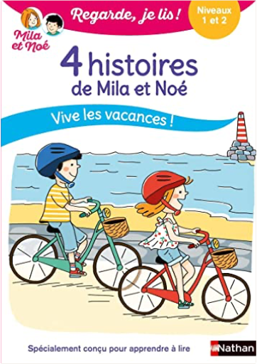
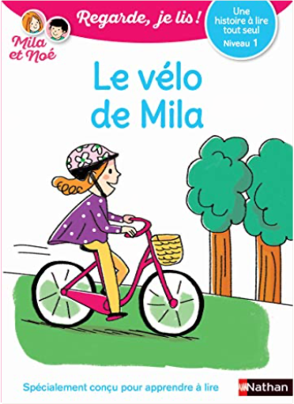
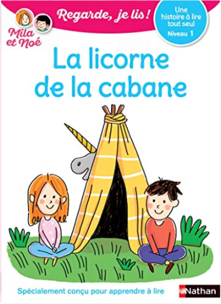

Books
Movies
Albums
Videogames
Games
BD
BD Camille
Blu-ray
Business
Camille
Comics
Cooking
Lego
Manga
Pauline
Photography
Star Wars
T'choupi
Travel
TV Shows
Un livre dont vous êtes le héro
Vinyl
Walt Disney
1
2
3
4
5
petite poule rousse
céline alvarez
le pique-nique de la famille Souris
Kazuo Iwamura
quel est ce fruit ?
anne crausaz
quel est ce légume ?
anne crausaz
qui se cache dans le jardin ?
louison nielman

Regarde je lis ! 4 histoires de Mila et Noé : vive les vacances !
Éric Battut
Regarde je lis ! BD, tome 3 : Mila et Noé et le parcours aventure
Éric Battut

Regarde, je lis ! tome 1 : Le vélo de Mila
Éric Battut

Regarde, je lis ! tome 5 : La licorne de la cabane
Éric Battut
Regarde, je lis ! tome 8 : Vive les amis !
Éric Battut
Regarde, je lis ! tome 21 : Mila et le petit cheval
Éric Battut
Résidence Beau Séjour
Gilles Bachelet
1
2
3
4
5


 Made with Delicious Library Made with Delicious Library
Made with Delicious Library Made with Delicious Library